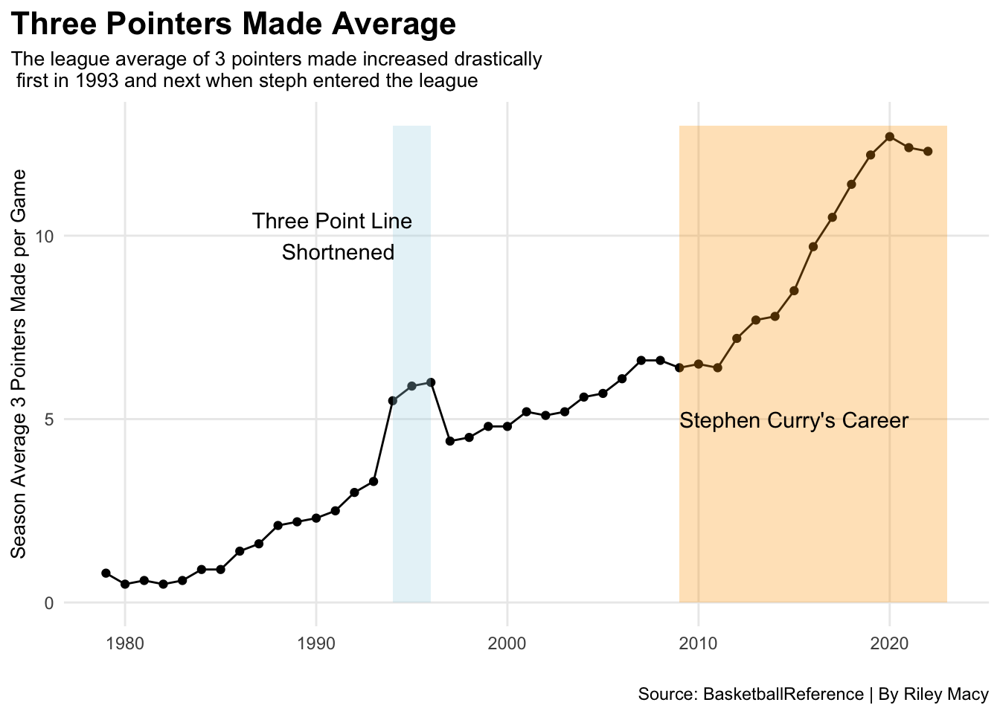
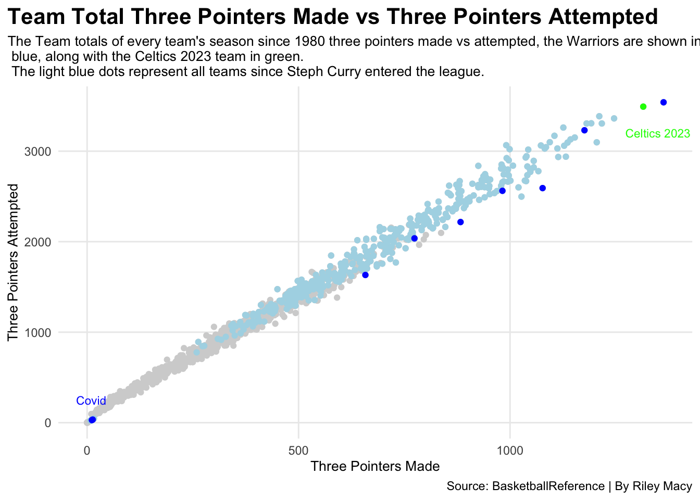
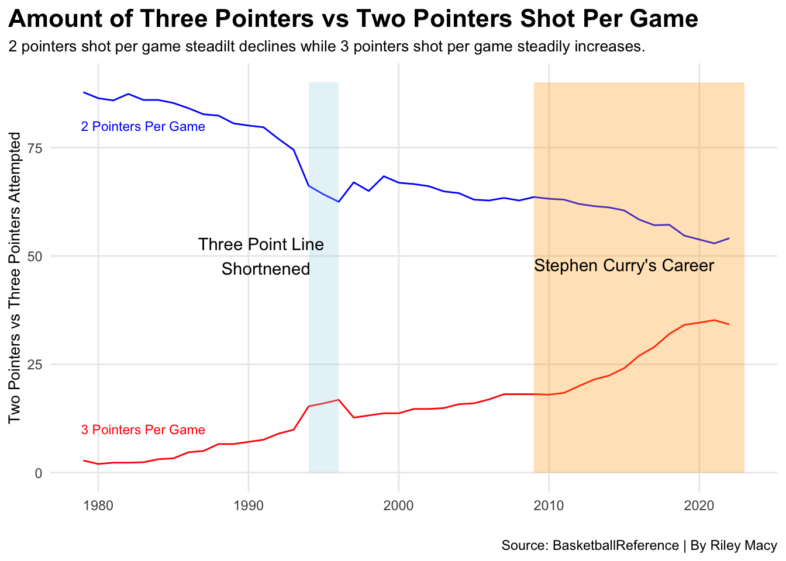

Stephen Curry entered the league as the No. 7 overall pick in the 2009 NBA Draft. He was selected by the Warriors and was instantly impactful. He was a very good shooter coming out of college setting the conference record for the most three pointers made. This was shown pretty quickly out of his career when he set the record for most three pointers made in the 2012-2013 season just three seasons into his career. He followed this up by beating his own record in 2015 and 2016. His three point shooting and the rate at which he shot them created a huge ripple throughout the NBA. The Warriors ran smaller lineups and valued the three pointer more coming from Curry and fellow splash brother Klay Thompsen. This resulted in change all over the league to look for more shooters to spread the court and create open shots from behind the three point line.
The three point line was introduced in the 1979-1980 season but it was not being used very often, only gaining a couple shots per game. The three point line was shortened in 1995 causing an uptick in the amount of three pointers made. A huge jump is seen during Stephen Curry’s career. When he entered the league in 2009 the average number of threes taken was around six per game and now it has almost doubled with over 12 threes taken per game.
Code
ggplot() +geom_line(data=seasonavg, aes(x=SeasonStart, y=`3P`, group=1)) +geom_point(data=seasonavg, aes(x=SeasonStart, y=`3P`)) +geom_rect(aes(xmin=2009, xmax=2023, ymin=0, ymax=13), fill="orange", alpha=.3)+geom_rect(aes(xmin=1994, xmax=1996, ymin=0, ymax=13), fill="light blue", alpha=.3) +geom_text(aes(x=1991, y =10, label ="Three Point Line \n Shortnened"), color ="black")+geom_text(aes(x=2015, y =5, label ="Stephen Curry's Career"), color ="black")+labs(x=" ",y="Season Average 3 Pointers Made per Game",title="Three Pointers Made Average ",subtitle="The league average of 3 pointers made increased drastically \n first in 1993 and next when steph entered the league ",caption="Source: BasketballReference | By Riley Macy" ) +theme_minimal() +theme(plot.title =element_text(size=16, face ="bold"),axis.title =element_text(size=10),plot.subtitle =element_text(size=10),panel.grid.minor =element_blank(),plot.title.position="plot")

If teams were going to start taking more threes they better start making them too. Seasons after steph had entered the league are at the top for three pointers attempted and three pointers made.
Code
ggplot() +geom_point(data=totals, aes(x=`3P`, y=`3PA`) ,color ="light grey") +geom_point(data=stepheffect, aes(x=`3P`, y=`3PA`) ,color ="light blue") +geom_point(data=warriors, aes(x=`3P`, y=`3PA`) ,color ="blue") +geom_point(data=celtics, aes(x=`3P`, y=`3PA`) ,color ="green") +geom_text(aes(x=10, y =250 , label ="Covid"), color ="blue", size =3)+geom_text(aes(x=1350, y =3200, label ="Celtics 2023"), color ="green", size =3) +labs(x="Three Pointers Made",y="Three Pointers Attempted",title="Team Total Three Pointers Made vs Three Pointers Attempted",subtitle="The Team totals of every team's season since 1980 three pointers made vs attempted, the Warriors are shown in \n blue, along with the Celtics 2023 team in green. \n The light blue dots represent all teams since Steph Curry entered the league.",caption="Source: BasketballReference | By Riley Macy" ) +theme_minimal() +theme(plot.title =element_text(size=16, face ="bold"),axis.title =element_text(size=10),plot.subtitle =element_text(size=10),panel.grid.minor =element_blank(),plot.title.position="plot" )

With the introduction of the three point line the amount of two pointers taken has significantly declined while three pointers are on a steady increase. During Steph Curry’s career the amount of two pointers taken is steady but with an increase in total shots.
Code
ggplot() +geom_line(data=seasonmutate, aes(x=SeasonStart, y=`2PTa`, group=1), color ="blue") +geom_line(data=seasonmutate, aes(x=SeasonStart, y=`3PA`, group =1), color ="red") +geom_rect(aes(xmin=2009, xmax=2023, ymin=0, ymax=90), fill="orange", alpha=.3)+geom_rect(aes(xmin=1994, xmax=1996, ymin=0, ymax=90), fill="light blue", alpha=.3) +geom_text(aes(x=1991, y =50, label ="Three Point Line \n Shortnened"), color ="black")+geom_text(aes(x=2015, y =48, label ="Stephen Curry's Career"), color ="black")+geom_text(aes(x=1983, y =80, label ="2 Pointers Per Game"), color ="blue", size =3)+geom_text(aes(x=1983, y =10, label ="3 Pointers Per Game"), color ="red", size =3) +labs(x=" ",y="Two Pointers vs Three Pointers Attempted",title="Amount of Three Pointers vs Two Pointers Shot Per Game",subtitle="2 pointers shot per game steadilt declines while 3 pointers shot per game steadily increases.",caption="Source: BasketballReference | By Riley Macy" ) +theme_minimal() +theme(plot.title =element_text(size=16, face ="bold"),axis.title =element_text(size=10),plot.subtitle =element_text(size=10),panel.grid.minor =element_blank(),plot.title.position="plot")

Stephen Curry’s effect on shooting is all over the league. He truly is one of the best shooters of all time not just off his own accolades but the effect he has had on the league. The game of basketball and its strategy was shifted by one man…Stephen Curry.